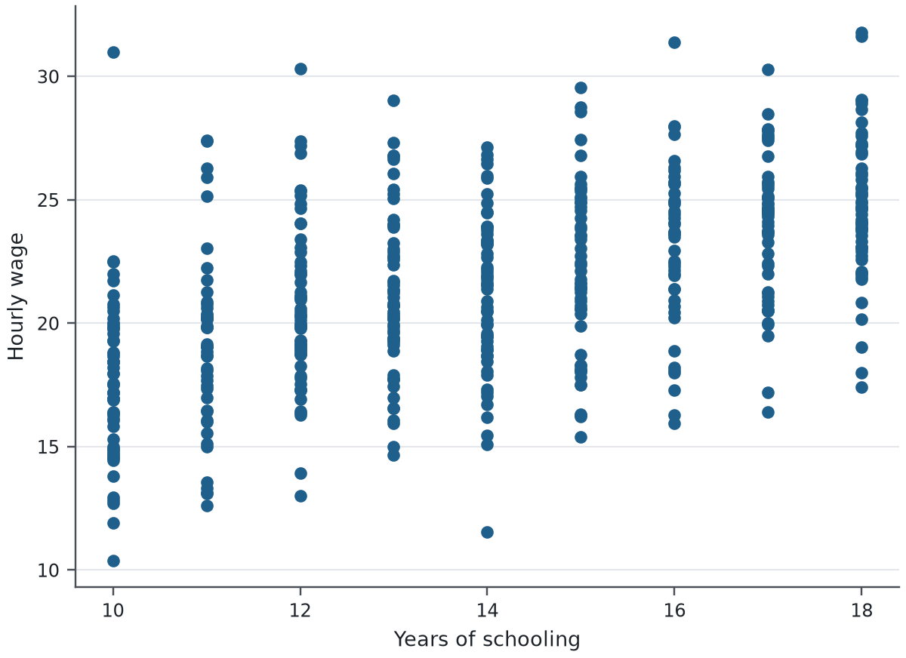

Files
- analysis.do
- clean.do
- data/
- raw/
- survey.csv 41 KB
- codebook.txt 2 KB
- wages.dta 8 KB
- output/
- analysis.log new
- scatter.png new
- old/
analysis.do×clean.do×
1* wages by age and schooling (synthetic data)2clear3set seed 20264set obs 5005gen age = 22 + floor(40*runiform())6gen educ = 10 + floor(9*runiform())7gen wage = 4 + .12*age + .9*educ + 3*rnormal()8label variable wage "Hourly wage"9label variable educ "Years of schooling"10save data/wages, replace11foreach v in age educ {12 local controls `controls' `v'13}14regress wage `controls'15scatter wage educ16graph export output/scatter.png, replace width(1200)17summarize wage if sex == 118reghdfe wage `controls', absorb(educ)
Log
FindDownload logUnsplit
. regress wage `controls' Source | SS df MS Number of obs = 500 -------------+---------------------------------- F(2, 497) = 172.07 Model | 3046.98519 2 1523.49259 Prob > F = 0.0000 Residual | 4400.35521 497 8.85383342 R-squared = 0.4091 -------------+---------------------------------- Adj R-squared = 0.4068 Total | 7447.34039 499 14.9245298 Root MSE = 2.9755 ------------------------------------------------------------------------------ wage | Coef. Std. Err. t P>|t| [95% Conf. Interval] -------------+---------------------------------------------------------------- age | .1111234 .0115734 9.60 0.000 .0883846 .1338622 educ | .8594138 .0515739 16.66 0.000 .7580842 .9607435 _cons | 4.857541 .9089541 5.34 0.000 3.071675 6.643408 ------------------------------------------------------------------------------ . scatter wage educ graph 1 . graph export output/scatter.png, replace width(1200) (file output/scatter.png written in PNG format) . summarize wage if sex == 1 sex not found → "sex" is not a variable, scalar or other known name. A word without quotes inside an expression is read as a name (of a variable, scalar or matrix); text values must be in double quotes. How to fix: if it is a text value, write "sex" with the quotes. Learn more: help summarize r(111); Go to line 17
dofile 0.1.0 · OpenDTA 0c3f3a2 · Stata 14 syntax Files stay in this browser. Try: help regress. regress wage `controls'
.Type a command · ↑ ↓ for earlier ones
Run
GraphDataResults
Help

graph 1 of 1 · scatter wage educOpen full sizeExport PNG